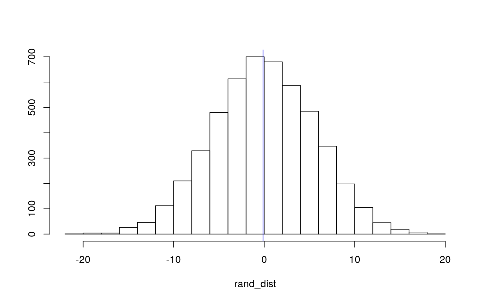
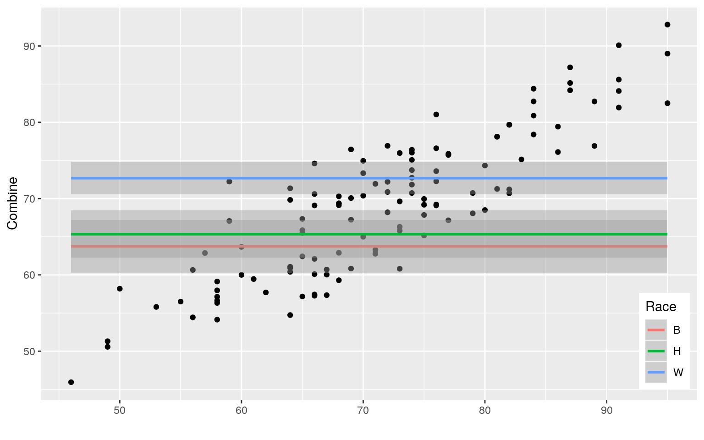
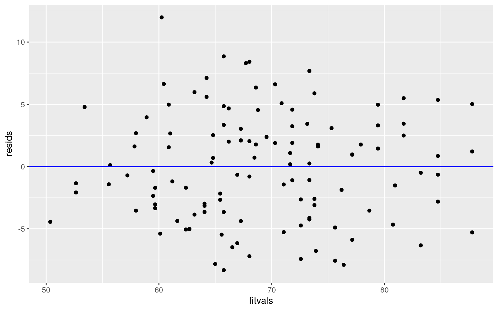
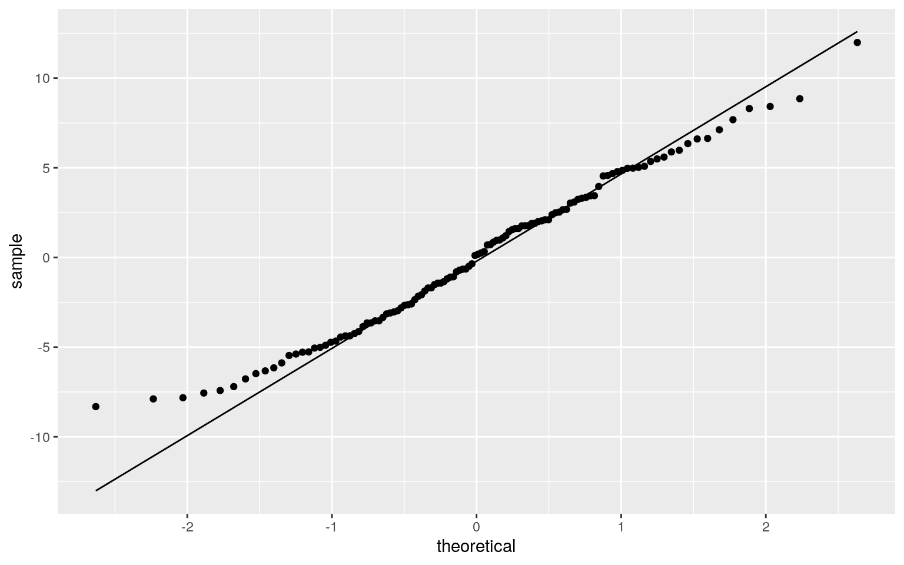
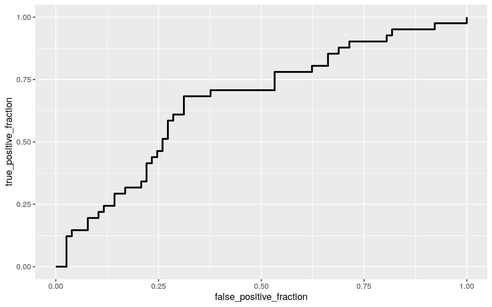

I choose the following data on firefighter demographics and exam scores used in deciding promotions. Included in this dataset are 5 variables and 118 observations from firefighters hoping to qualify for promotion to either Lieutenant or Captain in the New Haven, Connecticut fire department. 3 of the variables are numerical and 2 of the vairibles are categorical, with 1 of them having 3 categories and the other having the the potential to be binary. The 5 variables are Race (Black, White or Hispanic) of the firefighter, desired position of the firefighter (Captain or Leut.), and the 3 Neumerical variables: Written score, Oral score, and Combined score. The Combined score variable is manipulated as it incorperates 60% of the Written exam score and 40% of the Oral exam score.
install.packages("Stat2Data")
library(Stat2Data)
library(dplyr)
library(tidyr)
data(Ricci)library(ggplot2)
head(Ricci)## Race Position Oral Written Combine
## 1 W Captain 89.52 95 92.808
## 2 W Captain 80.00 95 89.000
## 3 W Captain 82.38 87 85.152
## 4 W Captain 88.57 76 81.028
## 5 W Captain 76.19 84 80.876
## 6 H Captain 76.19 82 79.676man1 <- manova(cbind(Oral, Written) ~ Race, data = Ricci)
# Ho:For Oral score and Written score, the means for each Race are equal.
# Ha:For Oral score or Written score, the mean differs for at least one Race.
summary(man1)## Df Pillai approx F num Df den Df Pr(>F)
## Race 2 0.31679 10.822 4 230 4.689e-08 ***
## Residuals 115
## ---
## Signif. codes: 0 '***' 0.001 '**' 0.01 '*' 0.05 '.' 0.1
' ' 1# Significant, so we reject the null meaning that there is some difference between
# the means. To get a better look at what is going on with the variables, we are
# going to perform Univariate Anovas.
summary(aov(Oral ~ Race, data = Ricci))## Df Sum Sq Mean Sq F value Pr(>F)
## Race 2 2553 1276.7 9.472 0.000156 ***
## Residuals 115 15500 134.8
## ---
## Signif. codes: 0 '***' 0.001 '**' 0.01 '*' 0.05 '.' 0.1
' ' 1summary(aov(Written ~ Race, data = Ricci))## Df Sum Sq Mean Sq F value Pr(>F)
## Race 2 2585 1292.3 14 3.63e-06 ***
## Residuals 115 10618 92.3
## ---
## Signif. codes: 0 '***' 0.001 '**' 0.01 '*' 0.05 '.' 0.1
' ' 1# There is a significant difference in average Oral exam scores between
# races. There is also a significant difference for the written exam scores.
# A post hoc analysis will be run to see which groups differ specifically.
pairwise.t.test(Ricci$Oral, Ricci$Race, p.adj = "none")##
## Pairwise comparisons using t tests with pooled SD
##
## data: Ricci$Oral and Ricci$Race
##
## B H
## H 0.038 -
## W 0.058 3.9e-05
##
## P value adjustment method: none# There is a significant difference in oral Scores between Black and Hispanic
# firefighters. There is also a significant difference between Hispanic and White
# Firefighters. There is no significant difference between firefighters who
# are Black and White. This means that the group that stands out is the
# Hispanic firefighters when when it comes oral exam scores.
pairwise.t.test(Ricci$Written, Ricci$Race, p.adj = "none")##
## Pairwise comparisons using t tests with pooled SD
##
## data: Ricci$Written and Ricci$Race
##
## B H
## H 0.0087 -
## W 6.4e-07 0.0694
##
## P value adjustment method: none# There is a significant difference between written scores for firefighters
# who are balck and hispanic, and those who are black and white, but there
# is no significant difference when it comes to hispanic and white firefighters.
# This means that the group that stands out is black firefighters; there is
# significant difference in Written scores for black firefighters.
# I have run 1 Manova, 2 Anovas, & 6 T-test (2 pair-wise T test, which is
# equivalent to 6 as each one is looking at 3 categories). In total, 9 tests were
# carried out. Since I conducted 6 hypothesis tests (Post-hoc), the probablity of
# having at least one type 1 error is 0.26490810937 (1-.95^6) bonferoni
# Correction. We will divide alpha of .05 by 6 to get a new alpha of .0833.
# The Assumptions for an Anova are Random Sample/Independent Observations,
# Independent Samples, Normal Distribution of each group, and Equal Variance. I
# think one of the assumptions that might be broken in this case is the sample
# size of the Hispanic Firefighters, which is smaller in comparison to White and
# Black Firefighters. Additionally, the variance of the samples is most likely
# affected since White Firefighters have a value which is nearly trippled that of
# the Hispanic #Firefighters.
Ricci %>% count(Race)## # A tibble: 3 x 2
## Race n
## <fct> <int>
## 1 B 27
## 2 H 23
## 3 W 68# Ho: Oral Score is the same for all 3 Races.
# Ha: Oral Score is different between all 3 Races.
# Since the Categorical Variable of Race has 3 categories, I found the mean for
# Black vs. White Firefighters, Black vs Hispanic Firefighters, and Hispanic vs
# White Firefighters. Then, I found the means for all 3 Races, added them
# together, and averaged the means of the means.
rand_dist <- vector()
for (i in 1:5000) {
new <- data.frame(Oral = sample(Ricci$Oral), Race = Ricci$Race)
rand_dist[i] <- ((mean(new[new$Race == "B", ]$Oral) - mean(new[new$Race ==
"H", ]$Oral)) + (mean(new[new$Race == "B", ]$Oral) - mean(new[new$Race ==
"W", ]$Oral)) + (mean(new[new$Race == "H", ]$Oral) - mean(new[new$Race ==
"W", ]$Oral)))
}
{
hist(rand_dist, main = "", ylab = "")
abline(v = -0.1293487, col = "Blue")
}
mean(rand_dist > -0.1293487) * 2## [1] 1.0064# Since the P-value is close to 1, we fail to reject the null hypopthesis.
# The data is not significant.library(lmtest)
library(sandwich)
fit <- lm(Combine ~ Race + Written, data = Ricci)
summary(fit)##
## Call:
## lm(formula = Combine ~ Race + Written, data = Ricci)
##
## Residuals:
## Min 1Q Median 3Q Max
## -8.3178 -3.4880 0.1479 3.0726 11.9852
##
## Coefficients:
## Estimate Std. Error t value Pr(>|t|)
## (Intercept) 15.41671 2.84549 5.418 3.4e-07 ***
## RaceH -3.92920 1.28710 -3.053 0.00282 **
## RaceW 0.18409 1.11575 0.165 0.86924
## Written 0.75983 0.04272 17.788 < 2e-16 ***
## ---
## Signif. codes: 0 '***' 0.001 '**' 0.01 '*' 0.05 '.' 0.1
' ' 1
##
## Residual standard error: 4.402 on 114 degrees of freedom
## Multiple R-squared: 0.7858, Adjusted R-squared: 0.7801
## F-statistic: 139.4 on 3 and 114 DF, p-value: < 2.2e-16ggplot(Ricci, aes(x = Written, y = Combine, group = Race)) + geom_point(aes(Color = Race)) +
geom_smooth(method = "lm", formula = y ~ 1, fullrange = T, aes(color = Race)) +
theme(legend.position = c(0.95, 0.15)) + xlab("")
resids <- fit$residuals
fitvals <- fit$fitted.values
ggplot() + geom_point(aes(fitvals, resids)) + geom_hline(yintercept = 0, color = "Blue") 
#linear.
ggplot() + geom_qq(aes(sample = resids)) + geom_qq_line(aes(sample = resids))
ks.test(resids, "pnorm", mean = 0, sd(resids))##
## One-sample Kolmogorov-Smirnov test
##
## data: resids
## D = 0.055244, p-value = 0.8641
## alternative hypothesis: two-sided#P-value of .8641, so we fail to reject Ho.
shapiro.test(resids) ##
## Shapiro-Wilk normality test
##
## data: resids
## W = 0.98549, p-value = 0.237#pvalue is .237 so we fail to reject Ho that the distribution is normal.
# The test appears to meet all the assumptions but I am still going to recompute
# the regression with robust standard errors.
fit <- lm(Combine ~ Race + Written, data = Ricci)
bptest(fit) ##
## studentized Breusch-Pagan test
##
## data: fit
## BP = 1.8997, df = 3, p-value = 0.5935#Pvalue is not significant but I am still going to move foward with caution.
summary(fit)$coef[, 1:2]## Estimate Std. Error
## (Intercept) 15.4167112 2.84549072
## RaceH -3.9292047 1.28710199
## RaceW 0.1840890 1.11575296
## Written 0.7598327 0.04271679coeftest(fit, vcov = vcovHC(fit))[, 1:2]## Estimate Std. Error
## (Intercept) 15.4167112 2.7503934
## RaceH -3.9292047 1.2362929
## RaceW 0.1840890 1.1578403
## Written 0.7598327 0.0417934# Looking at the changes in the standard error, they are very minor.
# the R-squared value of .7858 is the proportion of variation in the response
# varible and the Adjusted R-squared is .7801, which should be more conservative.boot_dat <- Ricci[sample(nrow(Ricci), replace = TRUE),]
fit2 <- lm(Combine ~ Race + Written, data = boot_dat)
samp_distn <- replicate(5000, {
boot_dat <- Ricci[sample(nrow(Ricci), replace = TRUE), ]
fit2 <- lm(Combine ~ Race + Written, data = boot_dat)
coef(fit2)
})
summary(fit2)##
## Call:
## lm(formula = Combine ~ Race + Written, data = boot_dat)
##
## Residuals:
## Min 1Q Median 3Q Max
## -8.1581 -2.8586 0.8026 2.2439 11.5565
##
## Coefficients:
## Estimate Std. Error t value Pr(>|t|)
## (Intercept) 16.5062 2.6662 6.191 9.7e-09 ***
## RaceH -2.7260 1.1210 -2.432 0.0166 *
## RaceW 0.1588 0.9030 0.176 0.8607
## Written 0.7486 0.0388 19.293 < 2e-16 ***
## ---
## Signif. codes: 0 '***' 0.001 '**' 0.01 '*' 0.05 '.' 0.1
' ' 1
##
## Residual standard error: 3.903 on 114 degrees of freedom
## Multiple R-squared: 0.7916, Adjusted R-squared: 0.7861
## F-statistic: 144.3 on 3 and 114 DF, p-value: < 2.2e-16samp_distn %>% t %>% as.data.frame %>% summarise_all(sd) #Estimated SE## (Intercept) RaceH RaceW Written
## 1 2.62486 1.212138 1.119752 0.03983561samp_distn %>% t %>% as.data.frame %>% gather %>% group_by(key) %>% summarize(lower =
quantile(value, 0.025), upper = quantile(value, 0.975))## # A tibble: 4 x 3
## key lower upper
## <chr> <dbl> <dbl>
## 1 (Intercept) 10.3 20.7
## 2 RaceH -6.36 -1.57
## 3 RaceW -2.18 2.27
## 4 Written 0.682 0.838# When compairng the p-values from this section to those from above, the same
# p-values that were significant above are still significant here. Furthermore, the
# only p-value that is not significnat is for the White Firefighters. When looking at
# the Standard Errors, they seem to get smaller with each test that is performed. library(plotROC)
Ricci$Position <- ifelse(Ricci$Position == "Captain", 1, 0)
fit3 <- glm(Position ~ Race + Oral + Written, data = Ricci, family = binomial(link = "logit"))
coeftest(fit3)##
## z test of coefficients:
##
## Estimate Std. Error z value Pr(>|z|)
## (Intercept) -2.908069 1.611023 -1.8051 0.071058 .
## RaceH 0.748824 0.674183 1.1107 0.266691
## RaceW 0.298058 0.564007 0.5285 0.597177
## Oral 0.051282 0.019162 2.6762 0.007446 **
## Written -0.020184 0.022498 -0.8972 0.369636
## ---
## Signif. codes: 0 '***' 0.001 '**' 0.01 '*' 0.05 '.' 0.1
' ' 1# Oral exam score is significant, meaning that it increases the log-odds of
# Position. So, we assume that the better the oral score the firefighters have
# makes them more likely to be promoted.
probs <- predict(fit3, type = "response")
mean(probs > 0.99)## [1] 0class_diag <- function(probs, truth) {
tab <- table(factor(probs > 0.5, levels = c("FALSE", "TRUE")), truth)
acc = sum(diag(tab))/sum(tab)
sens = tab[2, 2]/colSums(tab)[2]
spec = tab[1, 1]/colSums(tab)[1]
ppv = tab[2, 2]/rowSums(tab)[2]
if (is.numeric(truth) == FALSE & is.logical(truth) == FALSE)
truth <- as.numeric(truth) - 1
ord <- order(probs, decreasing = TRUE)
probs <- probs[ord]
truth <- truth[ord]
TPR = cumsum(truth)/max(1, sum(truth))
FPR = cumsum(!truth)/max(1, sum(!truth))
dup <- c(probs[-1] >= probs[-length(probs)], FALSE)
TPR <- c(0, TPR[!dup], 1)
FPR <- c(0, FPR[!dup], 1)
n <- length(TPR)
auc <- sum(((TPR[-1] + TPR[-n])/2) * (FPR[-1] - FPR[-n]))
data.frame(acc, sens, spec, ppv, auc)
}
class_diag(probs, Ricci$Position)## acc sens spec ppv auc
## 1 0.6525424 0.195122 0.8961039 0.5 0.6639214table(predict = as.numeric(probs > 0.5), truth = Ricci$Position) %>% addmargins## truth
## predict 0 1 Sum
## 0 69 33 102
## 1 8 8 16
## Sum 77 41 1188/41 #TPR/Sens## [1] 0.19512269/77 #TNR/Spec## [1] 0.8961039(69 + 8)/118 #Accuracy## [1] 0.6525424# With the AUC being .664, this makes for a pretty bad fit; with the currrent
# fit, it is highly likely that we would be misclasssifying things. The true
# positive rate is .195, the true negative rate is .896, and the accuracy is .653,
# making this a really poor model.
ROCplot <- ggplot(Ricci) + geom_roc(aes(d = Ricci$Position, m = predict(fit3,
type = "response")), n.cuts = 0)
ROCplot
calc_auc(ROCplot)## PANEL group AUC
## 1 1 -1 0.6639214# The AUC here is the same as that from above. Again, this AUC value makes for a poor
# represetative model. Additionaly, the structure of the graph makes it hard to predict
# Position with that we decided to use.
#10-fold
set.seed(1234)
k = 10
data1 <- Ricci[sample(nrow(Ricci)), ]
folds <- cut(seq(1:nrow(Ricci)), breaks = k, labels = FALSE)
diags <- NULL
for (i in 1:k) {
train <- data1[folds != i, ]
test <- data1[folds == i, ]
truth2 <- test$Position
fit4 <- glm(Position ~ Race + Oral + Written, data = train, family = "binomial")
probs2 <- predict(fit4, newdata = test, type = "response")
diags <- rbind(diags, class_diag(probs2, truth2))
}
apply(diags, 2, mean)## acc sens spec ppv auc
## 0.6189394 0.1083333 0.8938889 NaN 0.6457474# Here, there is a change in Accuarcy and TPR; they both decrease which means
# that this new model still is not a good fit. Furthermore, the AUC also decreased
# meaning that these predictors are still not a great way of predicting Postion.fit5 <- lm(Combine ~ ., data = Ricci)
summary(fit5)##
## Call:
## lm(formula = Combine ~ ., data = Ricci)
##
## Residuals:
## Min 1Q Median 3Q Max
## -8.201e-15 -2.805e-15 1.846e-16 2.296e-15 1.467e-14
##
## Coefficients:
## Estimate Std. Error t value Pr(>|t|)
## (Intercept) -1.132e-14 2.962e-15 -3.820e+00 0.000219 ***
## RaceH 1.210e-15 1.249e-15 9.690e-01 0.334672
## RaceW 1.690e-15 1.037e-15 1.630e+00 0.105878
## Position -1.032e-15 8.178e-16 -1.262e+00 0.209522
## Oral 4.000e-01 3.594e-17 1.113e+16 < 2e-16 ***
## Written 6.000e-01 4.215e-17 1.424e+16 < 2e-16 ***
## ---
## Signif. codes: 0 '***' 0.001 '**' 0.01 '*' 0.05 '.' 0.1
' ' 1
##
## Residual standard error: 4.084e-15 on 112 degrees of
freedom
## Multiple R-squared: 1, Adjusted R-squared: 1
## F-statistic: 1.237e+32 on 5 and 112 DF, p-value: <
2.2e-16library(glmnet)
y <- as.matrix(Ricci$Position)
x <- model.matrix(fit5)[, -1]
x <- scale(x)
cv <- cv.glmnet(x, y, family = "binomial")
lasso <- glmnet(x, y, family = "binomial", lambda = cv$lambda.1se)
coef(lasso)## 6 x 1 sparse Matrix of class "dgCMatrix"
## s0
## (Intercept) -2.527558
## RaceH .
## RaceW .
## Position 6.934990
## Oral .
## Written .# position is the only variable with a value next to it so it will be used in the
# 10 fold CV in the following part.
set.seed(1234)
data2 <- Ricci[sample(nrow(Ricci)), ]
folds <- cut(seq(1:nrow(Ricci)), breaks = k, labels = FALSE)
diags <- NULL
for (i in 1:k) {
train2 <- data2[folds != i, ]
test2 <- data2[folds == i, ]
truth3 <- test2$Combine
fit6 <- lm(Combine ~ Position, data = train2)
probs4 <- predict(fit6, newdata = test2, type = "response")
preds <- ifelse(probs4 > 0.5, 1, 0)
diags <- rbind(diags, class_diag(probs4, truth3))
}
diags %>% summarize_all(mean)## acc sens spec ppv auc
## 1 0.08484848 1 0 0.08484848 1summary(fit5)##
## Call:
## lm(formula = Combine ~ ., data = Ricci)
##
## Residuals:
## Min 1Q Median 3Q Max
## -8.201e-15 -2.805e-15 1.846e-16 2.296e-15 1.467e-14
##
## Coefficients:
## Estimate Std. Error t value Pr(>|t|)
## (Intercept) -1.132e-14 2.962e-15 -3.820e+00 0.000219 ***
## RaceH 1.210e-15 1.249e-15 9.690e-01 0.334672
## RaceW 1.690e-15 1.037e-15 1.630e+00 0.105878
## Position -1.032e-15 8.178e-16 -1.262e+00 0.209522
## Oral 4.000e-01 3.594e-17 1.113e+16 < 2e-16 ***
## Written 6.000e-01 4.215e-17 1.424e+16 < 2e-16 ***
## ---
## Signif. codes: 0 '***' 0.001 '**' 0.01 '*' 0.05 '.' 0.1
' ' 1
##
## Residual standard error: 4.084e-15 on 112 degrees of
freedom
## Multiple R-squared: 1, Adjusted R-squared: 1
## F-statistic: 1.237e+32 on 5 and 112 DF, p-value: <
2.2e-16summary(fit6)##
## Call:
## lm(formula = Combine ~ Position, data = train2)
##
## Residuals:
## Min 1Q Median 3Q Max
## -19.3351 -7.7984 0.0832 5.7245 22.1689
##
## Coefficients:
## Estimate Std. Error t value Pr(>|t|)
## (Intercept) 68.717 1.112 61.794 <2e-16 ***
## Position 1.922 1.833 1.049 0.297
## ---
## Signif. codes: 0 '***' 0.001 '**' 0.01 '*' 0.05 '.' 0.1
' ' 1
##
## Residual standard error: 9.102 on 104 degrees of freedom
## Multiple R-squared: 0.01046, Adjusted R-squared:
0.000946
## F-statistic: 1.099 on 1 and 104 DF, p-value: 0.2968# Since the response is a numeric value, I will use the Residual Standard Error
# from fit 5 to compare it to the lasso fit, which is fit 6. In fit 5 I wanted to see if
# the Combine score was predicted well by all the other variables. Once performing a Lasso
# the only varible that was reported was position. A 10 fold CV was then performed on the
# Combine Score only accounting for postion. The residual standard error is of fit 6 is
# 9.102 which is greater than that of fit 5, which was 4.084e-15. Since the value here was
# higher, it is not a better fit.data(package = .packages(all.available = TRUE))